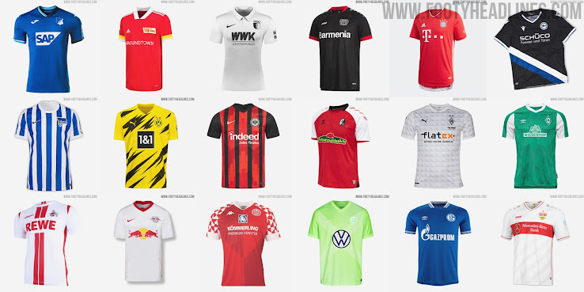

Ein Trikot (französisch tricot, zu tricoter ‚stricken‘) oder Dress ist im Sport ein meist farbiges Sporthemd. In Mannschaftssportarten ist es häufig mit Rückennummer und Namen des Sportlers versehen und in den Farben der Mannschaft bzw. des Vereins gestaltet. Trikots werden vom Sportler während des Wettkampfs getragen; sie haben daher den Charakter von Arbeitskleidung, insbesondere im Profisport. Sie bezeichnen in der Regel ein Kleidungsstück mit Ärmeln.
